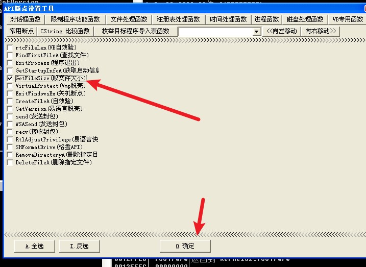
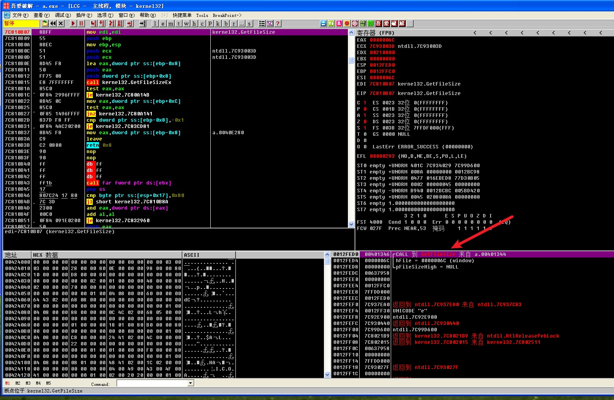
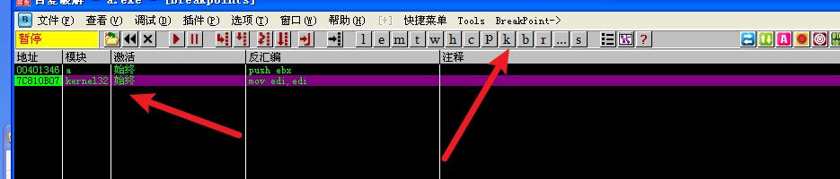
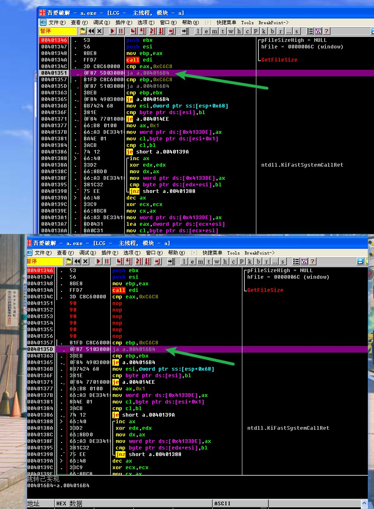
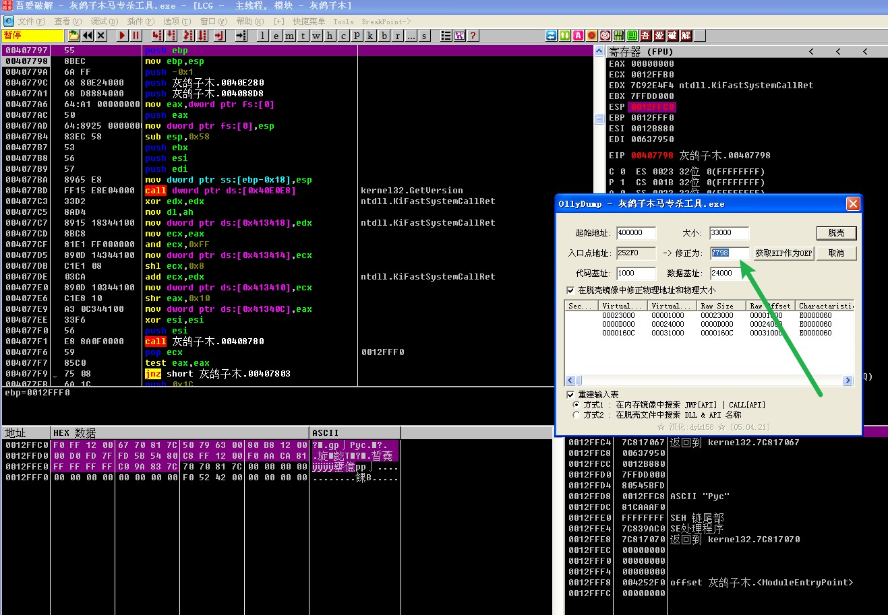
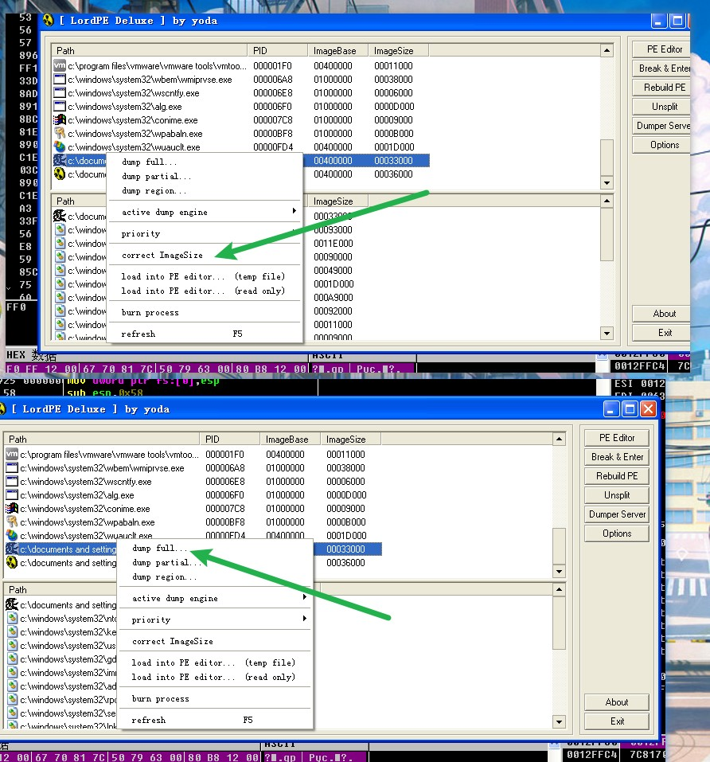
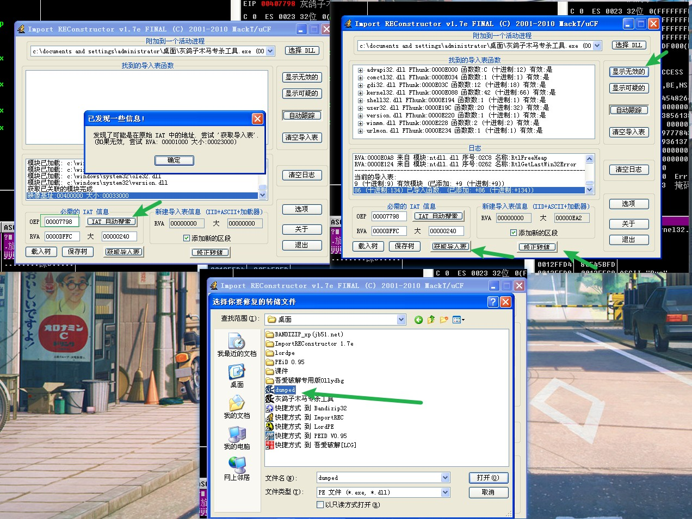

本文最后编辑于 前，其中的内容可能需要更新。
esp定律脱壳
1
2
3
4
5
6
7
8
9
10
11
12
13
| 第一种方法：
1.第一行是pushed，且单步一次（f8）之后只有ESP是红的
2.esp右键数据窗口中跟随->选中开头的数据（随便多少）右键断点（硬件访问（三个都可以））
3.调试->硬件断点->跟随
4.F9->F8->F8
5.分析->从模块中删除分析
6.右键ollydump脱壳调试进程（重建输入表一个，不重建输入表一个）
第二种：
1.HW break [ESP] （Hardware break） F9->F8->F8
2.分析->从模块中删除分析
3.右键ollydump脱壳调试进程（重建输入表一个，不重建输入表一个）
|
灰鸽子木马专杀工具破解
esp定律脱壳拉od去
下一个getfilesize的断点。然后f9运行

右键在反汇编窗口中跟随过去。F2下个断点

再去b模块（断点）里把自带的断点给删除了

f9运行起来之后就来到了getfilesize的断点之后。看到他有比较。在运行几次，看到跳转就把他nop
1
2
3
4
| 加壳了的程序都会变小
壳基本都有压缩功能
他比较的c6c8其实就是文件未脱壳的大小了
所以我们要把他比较之后的跳转nop了
|

另类脱壳
复制这里的修正大小

修正镜像大小->完整转存

import rec 打开
粘贴之前的大小，idt自动搜索->显示无效的->修正转储（之前转存的dump.exe）
